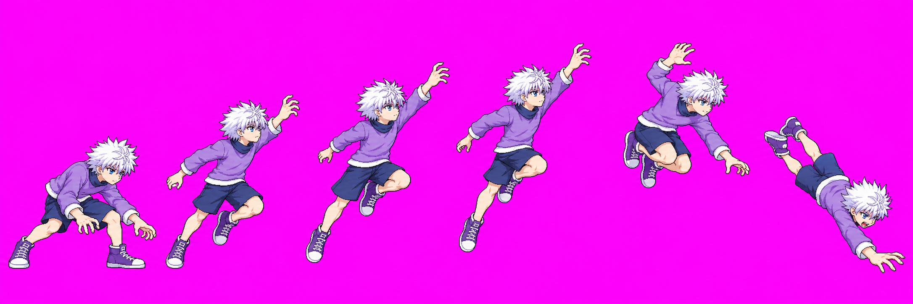
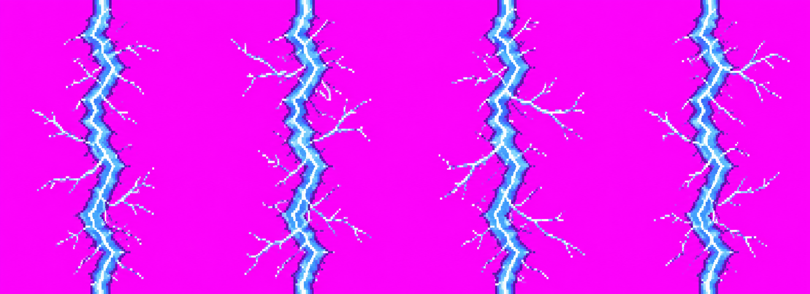
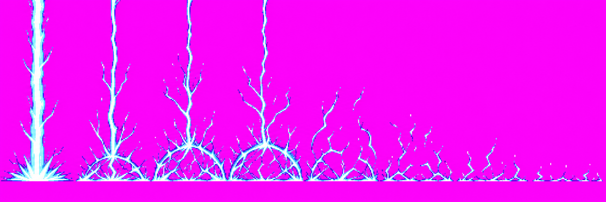
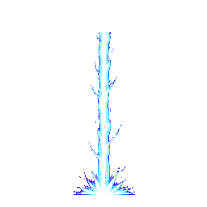

Killua skills revamp · batch 2: Narukami
Review candidates: B1 specialUp_v09, A8 narukamiBolt_v01, A9 narukamiStrike_v01. The source images are preserved byte-for-byte. This page shows the raw candidates and the packed VFX frames that were detected.
Technical holds: B1 has no quantized v09 atlas: packer scale gate reports f0 head 1.12× idle and f5 0.78× idle. The body-sheet command read v08 cached frames, not v09; Astra's raw review is HOLD and a final atlas audit remains pending. A8 packs 4/4 frames, but its tile edge rows differ slightly (53–57 RGBA channel differences per frame, so not an exact seamless tile). A9 packs 7/8; all three calls used and its floor baseline is too high. VFX sources also exceed the 16-color rule and use near-magenta corners; see [attempt inventory](ATTEMPT_INVENTORY.md).
B1 · specialUp v09

3/3 calls. Packer detects six poses but does not write a quantized atlas because the within-strip scale gate fails. The v08 frame set is not shown as v09 evidence. Astra raw review: HOLD.
A8 · vertical Narukami stack over B1 dive f5
Three copies show the vertical stack. The narrow crop is raw v09 f5, not an atlas cell; exact quantized game placement is unavailable while B1 is held.

2 calls; source 2079×756; packer finds 4/4. Edge-row test: 53–57 RGBA channel mismatches per frame. View 256×256 packed-frame animation.
A9 · Narukami floor strike

v01 selected from call 2/3. Packer detects 7/8 frames and the floor baseline sits around 64% of source height instead of near 94%.
Packed partial animation

Partial 7-frame 256×256 preview only. Call 3 was not filed as v02 because its layout and floor placement did not materially improve.
Verdict
Identity: the effects use Killua's angular white-cyan lightning with violet rims and remain visually distinct from the dense Chidori knot. Pose and proportions: B1 has a readable coil-to-dive sequence, but repeated rise poses and occluded rear arm need review; the scale gate fails. Technical: no B1 quantized atlas, A8 seam is not exact, and A9 is missing one packed frame. No candidate is approved yet.
Nothing in this gallery is a release atlas. Review the three images separately; visual approval will not clear these technical holds.